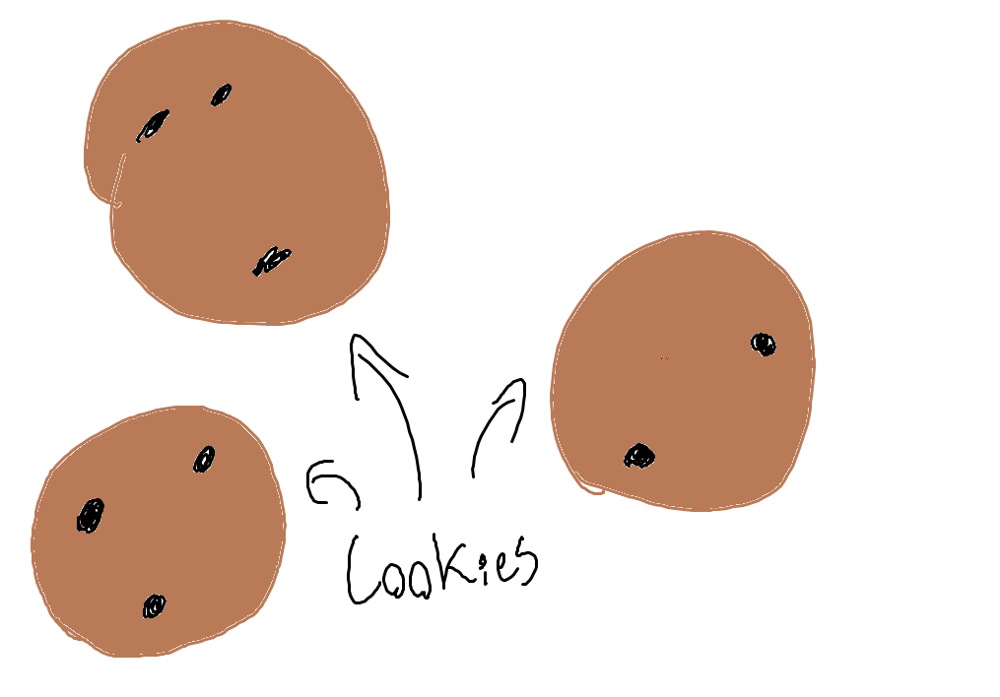

What we do with your cookies
We all know that cookies are delishous. What we don't know about cookies are how harmful they can be to you (and how we can use them to our advantage).
By continuing onto our site, we will not only eat your cookies, we will eat the last cookie.
Not only do we use your cookies, we also use sessions. These sessions are created using an AI that is built to feel emotion. These emotions will always be directly linked to you! So if you're having a bad day, it will too.
If you decide to close your account, we understand. But, you should keep in mind that your session will be brutally executed for not living up to your expectations.
